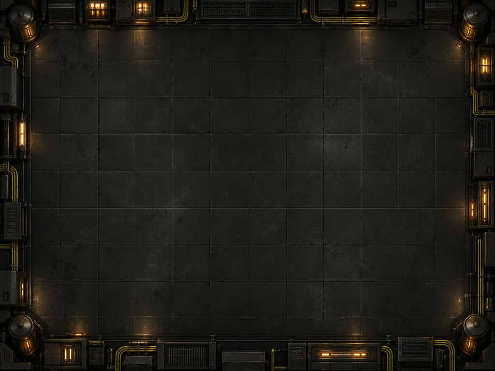

FREQUENCY / ROOM
接通信号，找到出口。
三个单屏房间，三枚收集标记。观察 A 与 B 的顺序，打开信号门，在短短几分钟里完成一次探索。
开始之前
点击地图自动寻路，或使用 WASD 和屏幕方向键移动。走到节点上按 E 或“交互”，按提示顺序接通信号。找到三枚标记后，前往右上角出口。
Esc 暂停，离开标签页自动暂停。进度与通关成绩保存在同一站点、当前设备上；声音默认关闭。
一个玩法，一个入口
这里保留旧世界页面的访问入口，实际探索在频率密室中完成。游戏中心负责发现和继续对局，让你可以随时回来。